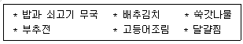
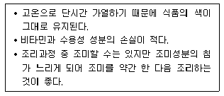

조리기능장 (2005-07-17 기출문제)
1과목: 임의 구분
1. 내열성이 강해서 자비소독으로 효과가 없는 것은?
- 결핵균
- 살모넬라균
- 연쇄상구균
- 포자형성균
(정답률: 49%)

2. 투베르쿨린 반응검사의 목적은?
- 결핵 감염여부 진단
- 결핵 완치여부 진단
- 결핵균 배출여부 진단
- 결핵 진행여부 진단
(정답률: 73%)
3. 공중보건사업의 대상은?
- 지역사회전체주민
- 일반근로자
- 가족
- 저소득자
(정답률: 84%)
4. 사람에게 가장 쾌적감을 주는 습도의 범위는?
- 10∼20%
- 20∼40%
- 40∼70%
- 70∼90%
(정답률: 62%)
5. 학교급식의 교육적 측면에 해당하는 사항은?
- 올바른 식습관 형성
- 건강증진 및 체위향상
- 합리적인 영양공급
- 효율적인 학교급식
(정답률: 62%)
6. 고온환경에서 작업시 체내 수분 및 염분의 손실로 경련 발작증상을 나타내는 것은?
- 열경련
- 열허탈
- 열사병
- 열성발진
(정답률: 70%)
7. 제1군 법정전염병에 해당하는 것은?
- 디프테리아
- 세균성이질
- 일본뇌염
- 유행성이하선염
(정답률: 38%)
8. 인구집단의 질병상태를 사람, 시간, 장소의 측면에서 관찰하는 1단계 역학은?
- 분석역학
- 실험역학
- 기술역학
- 이론역학
(정답률: 36%)
9. 2차 오염물질에 해당하는 것은?
- 황산화물
- 일산화탄소
- 질소산화물
- 광화학적 산화물
(정답률: 55%)
10. 연어나 송어를 생식할 때 걸리기 쉬운 기생충 질환은?
- 이질아메바증
- 말레이사상충증
- 광절열두조충증
- 갈고리촌충증
(정답률: 75%)
11. 매개곤충과 전염병의 연결이 틀린 것은?
- 이 - 발진티푸스, 재귀열
- 바퀴 - 이질, 콜레라, 회충
- 파리 - 결핵, 페스트, 발진열
- 모기 - 일본뇌염, 황열, 말라리아
(정답률: 62%)
12. 공중보건에 비하여 전통의학의 특성에 해당하는 것은?
- 지역사회중심
- 개인의 진단
- 보건팀의 접근
- 비용공동부담
(정답률: 60%)
13. 부패에 대한 설명 중 옳지 않은 것은?
- 부패란 식품성분이 저분자 화합물로 분해된 후 미생물이 증식하여 여러가지 부패산물을 생성하는 것이다.
- 단백질 식품이 부패되면 암모니아, 아민류, H2S 등이 생성된다.
- 붉은살 생선에 많이 들어 있는 히스티딘은 부패시 히스타민으로 되어 식중독을 일으킬 우려도 있다.
- 해산어류의 감칠맛 성분인 트리메틸아민은 부패시 트리메틸아민옥시드가 되어 비린내를 낸다.
(정답률: 64%)
14. HACCP에서 CCP와 관계가 없는 것은?
- 조리(가열) 시간
- 조리온도
- 세척
- 재가열
(정답률: 61%)
15. 달걀, 쥐 등에서 주로 오염되는 식중독은?
- 장염 비브리오 식중독
- 대장균 식중독
- 살모넬라 식중독
- 보툴리누스 식중독
(정답률: 71%)
16. 살균제의 용도로 사용할 수 있는 물질은?
- 아질산 나트륨
- 안식향산 나트륨
- 차아염소산 나트륨
- 구연산 나트륨
(정답률: 66%)
17. 식품과 독성분이 맞게 연결된 것은?
- 독미나리 - 베네루핀(venerupin)
- 섭조개 - 삭시톡신(saxitoxin)
- 청매 - 시큐톡신(cicutoxin)
- 감자 - 아미그달린(amygdalin)
(정답률: 87%)
18. 먹는 물의 분변오염지표가 되는 세균속은?
- Pseudomonas 속
- Clostridium 속
- Escherichia 속
- Salmonella 속
(정답률: 67%)
19. 식품위생의 목적과 거리가 먼 것은?
- 식품 영양의 질적향상 도모
- 식품으로 인한 위생상의 위해 방지
- 국민보건의 향상과 증진
- 식품 영양가의 향상
(정답률: 77%)
20. 집단 식중독이 발생하였을 때의 처치사항을 설명한 것으로 틀린 것은?
- 환자의 가검물을 원인조사시까지 보관한다.
- 즉시 항생물질을 복용시킨다.
- 관계기관에 즉시 신고한다.
- 원인식을 조사한다.
(정답률: 80%)
2과목: 임의 구분
21. 식품 위생학적으로 가장 위험한 식품 온도 범위는?
- 48∼56℃
- 30∼38℃
- 10∼20℃
- 0∼8℃
(정답률: 63%)
22. 환경오염 중 공장 폐수에 기인하는 식품오염에 있어서 원인 물질과 대표적인 병명(또는 증상)을 연결한 것 중에서 틀린 것은?
- 유기수은 - 간, 콩팥 등 일반장기 괴사를 수반한 급성 중독 증상
- 카드뮴 - 이타이 이타이병
- 유기수은 - 미나마타병
- 카드뮴 - 허리 등의 둔통과 고관절부 통증(동통)을 수반하는 만성중독 증상
(정답률: 62%)
23. 가열에 의한 육류의 변화로 올바른 것은?
- 고기가 가열되면 고기내부의 선명한 붉은색은 온도가 상승할수록 회색빛을 띤 갈색으로 변한다.
- 고기를 가열하는 목적은 오직 맛을 돋구기 위함이다.
- 고기는 고열에 장시간 가열해야 연하고 부드럽다.
- 소는 돼지보다 어릴 때 잡기 때문에 돼지고기보다 항상 연하다.
(정답률: 82%)
24. 검수원의 업무내용이 아닌 것은?
- 주방물품의 내용과 수량에 관한 검수
- 미납품, 또는 반품현황을 해당부서와 구매부로 전달
- 필요에 따라 시식 또는 시험에 의한 검수
- 발주서를 받고 송장을 구매 담당자에게 우송
(정답률: 52%)
25. 복어의 손질과 조리방법 중 맞지 않는 것은?
- 복어에는 장기, 아가미, 심장, 안구, 비장, 점막, 난소등에 테트로도톡신이 분포되어 있으므로 반드시 제거하고 조리해야 한다.
- 식용 가능한 복은 별복, 선인복, 무늬복, 배복 등이 있다.
- 복요리 코스는 복어진미, 복어전채, 맑은 국, 복어회, 튀김, 복냄비, 초회, 죽, 후식의 순이다.
- 히레사케는 복 지느러미를 말려서 구운 다음 정종속에 불을 붙여 취음하는 술이며, 복요리와 잘 어울린다.
(정답률: 54%)
26. 다음 중 균형있는 한식 상차림을 하려면 보강되어야 할 식품군의 음식명은?

- 돼지고기 볶음
- 콩조림
- 뱅어포 구이
- 콩나물 무침
(정답률: 63%)
27. 프랑스 요리에 대한 설명으로 맞는 것은?
- 전채요리에는 포아그라(Foie Gras) 테린이 있는데 철갑상어알을 이용하며 세계 3대 진미에 속한다.
- 스프는 주요리의 제1코스로 포타지(Potage)는 맑게 끓인 스프이다.
- 앙뜨레 요리인 샤또브리앙(Chateaubriand)은 필렛고기의 가운데 부분의 튼튼한 곳을 두껍게 절단하여 만든 것이다.
- 채소요리로 치즈를 이용한 세보리는 "한입의 요리"라는 뜻으로 앙뜨레 다음에 꼭 나온다.
(정답률: 50%)
28. 음과 같은 특징을 갖는 조리법은?

- 찜
- 튀김
- 직접구이
- 볶음
(정답률: 44%)
29. 우유의 조리에 의한 변화에 대한 설명 중 옳지 않은 것은?
- 밀가루를 만든 과자에 우유를 넣으면 노릇노릇한 색이 들기 쉽다.
- 우유의 피막형성은 냄비의 뚜껑을 닫거나, 거품을 내어 데우거나, 마시멜로우 같은 물질을 띄우거나 함으로써 방지할 수 있다.
- 우유의 가열취는 우유단백질 중의 β-lactoglobulin이나 지방구 피막단백질의 열변성에 의한 -SH기에서 생겨난 것이다.
- 우유를 끓이면 신선할 때에 비해 맛이 적어지는데 이는 가열에 의해서 알부민(albumin)이 날아가기 때문이다.
(정답률: 58%)
30. 다음 가열조리에 관한 연결 중 틀린 것은?
- 기름에 튀긴다 - 건열가열
- 볶는다 - 습열가열
- 찐다 - 습열가열
- 직화에 굽는다 - 건열가열
(정답률: 79%)
31. 단체급식에서 식품저장 방법에 대한 연결이 바르게 된 것은?
- 마요네즈 - 상온보관
- 곡물 - 냉장보관
- 마가린 - 상온보관
- 육가공품 - 냉장보관
(정답률: 71%)
32. 메뉴 평가의 한 방법인 메뉴 엔지니어링에 대한 설명 중 틀린 것은?
- 제공되는 메뉴에 대한 고객의 의견을 종합 평가하여 메뉴 운영에 반영하기 위한 조사이다.
- 단체급식이나 레스토랑에서의 메뉴평가 기법으로 활용되고 있다.
- 메뉴 품목의 판매비율과 공헌마진에 따라 4가지의 범주로 분류된다.
- Plowhorses로 판정된 품목들은 다소 인기는 있지만 수익이 낮은 메뉴이다.
(정답률: 33%)
33. 곡류의 조리에 관여하는 이론 중 옳지 않은 것은?
- 밥을 지을 때는 전분의 호화작용이 일어난다.
- 보리밥에는 식이섬유소의 함량이 많다.
- 찰밥은 아밀로오스 함량이 많아 점착성이 강하다.
- 초밥은 보통밥보다 더 빨리 단단해진다.
(정답률: 50%)
34. 조리의 목적에 해당되는 예가 아닌 것은?
- 채소를 물에 담가 아삭한 맛을 증가시킨다.
- 우유에 칼슘을 강화시킨다.
- 감자의 싹을 제거한다.
- 사과로 잼을 만들었다.
(정답률: 75%)
35. 우리나라 25세의 성인남자가 총 에너지의 60%를 주식으로 섭취하고자 한다. 하루 동안 섭취할 주식의 열량과 쌀의 양은 얼마인가? (단, 쌀 100g의 열량은 356kcal이다.)
- 열량 - 2,000kcal, 쌀의 양 - 약 500g
- 열량 - 2,000kcal, 쌀의 양 - 약 561g
- 열량 - 1,500kcal, 쌀의 양 - 약 375g
- 열량 - 1,500kcal, 쌀의 양 - 약 421g
(정답률: 39%)
36. 다음 중 대두 가공품의 소화율이 가장 높은 것은?
- 콩장
- 비지
- 두부
- 된장
(정답률: 69%)
37. 밀가루 반죽의 성질에 영향을 주는 요인이 아닌 것은?
- 밀가루의 종류
- 밀가루의 색깔
- 반죽을 치대는 정도
- 첨가물(소금, 설탕, 유지, 달걀, 이스트)의 양
(정답률: 82%)
38. 다음 향신료의 향과 주요리에 관한 연결이 틀린 것은?
- 카더몬(cardamom) : 강한냄새와 교취효과 - 빵, 쿠키, 케이크, 피클
- 펜넬(fennel) : 달콤한 방향 - 피클, 생선, 캔디
- 캐러웨이(caraway) : 새콤하고 상쾌한 향기 - 누들, 스튜, 캐비지요리
- 너트메그(nutmeg) : 달콤한 자극성 향기 - 소시지, 파이, 달걀요리
(정답률: 62%)
39. 불 조절에 가장 유의하여야 하는 조리법은?
- 찌기
- 튀기기
- 굽기
- 끓이기
(정답률: 70%)
40. 난백의 기포성에 대한 설명으로 맞는 것은?
- 신선한 달걀이 저장된 달걀보다 수양난백이 많으므로 기포성이 더 좋다.
- 난백의 온도가 낮을수록 기포형성이 용이하다.
- 난백을 교반하는 과정에서 처음에는 안정성이 높으나 점점 안정성이 감소된다.
- 설탕의 첨가량이 많을수록 거품형성이 현저하게 좋아진다.
(정답률: 44%)
3과목: 임의 구분
41. 장조림에 가장 적합한 부위는?
- 양지
- 목심
- 소머리
- 우둔
(정답률: 74%)
42. 양배추, 컬리 플라워, 양파 등의 백색채소를 조리할 때 그 색을 선명하게 하고자 한다. 어느 것을 사용해야 하는가?
- 식초
- 설탕
- 간장
- 중탄산나트륨
(정답률: 80%)
43. 오징어, 문어 등 연체류의 혈색소에 함유된 무기질과 혈색소의 명칭이 옳은 것은?
- 마그네슘 - 타우린
- 구리 - 헤모시아닌
- 철 - 헤모글로빈
- 칼슘 - 아스타잔틴
(정답률: 35%)
44. 원가관리의 필요성으로 맞지 않는 것은?
- 원가절감
- 변동원가 계산의 용이
- 판매분석 용이
- 조리작업의 능률화
(정답률: 71%)
45. 다음 중 식품을 물에 담그는 시간이 잘못된 것은?
- 표고버섯 : 20∼30분
- 해조류 : 6시간
- 콩 : 4∼12시간
- 쌀 : 30분∼1시간 30분
(정답률: 69%)
46. 조리작업장의 안전사고 요인으로 알맞지 않은 것은?
- 주방시설 및 조리작업장 장비의 일상적 관리 소홀
- 전기 및 가스사용 부주의
- 조리작업의 편의를 위한 유니폼과 안전화 착용
- 작업자들의 정신적, 육체적 피로함
(정답률: 70%)
47. 조리용 기기사용이 부적당한 것은?
- 슬라이서(slicer) - 저미거나 썬다.
- 필러(peeler) - 감자, 당근의 껍질을 벗긴다.
- 에그비터(egg beater) - 달걀 흰자를 거품낼 때 사용한다.
- 브로일러(broiler) - 육류를 연하게 하기 위해 두드릴 때 사용한다.
(정답률: 77%)
48. 식품의 냉동에 대한 설명으로 틀린 것은?
- 냉동을 할 때에는 급속냉동을 해야 식품 중의 물이 작은 크기의 얼음 결정을 형성하여 조직의 파괴가 적다.
- 얼음 결정의 성장은 빙점이하에서는 온도가 높을수록 빠르므로 냉동된 식품은 저온에서 보관하는 것이 좋다.
- 냉동은 식품을 동결함으로써 미생물의 번식을 억제하고 식품중의 여러가지 효소의 작용을 억제하여 품질을 보존시킨다.
- 어육을 동결하게 되면 해동을 해도 식품의 질감이 달라지는데 이는 지방의 변성에 의한 것이다.
(정답률: 50%)
49. 다음 식품 재료 중 100g 당 비타민 C 함량이 가장 높은 것은?
- 두부
- 강낭콩
- 청국장
- 콩나물
(정답률: 66%)
50. 일본음식에 대한 설명으로 옳지 않은 것은?
- 일본음식의 식문화는 육식보다는 콩 음식이 더 발달되어 있다.
- 초밥은 스시라고 하며 가장 오랜 전통을 가지는 스시는 마카스시이다.
- 생선회는 관서지방에서「츠꾸리」라고 하고 관동지방에서는「사시미」라고 한다.
- 회의 부재료로는 겐, 쓰마, 가라미가 있어 곁들이는 부재료의 어울림과 생선, 양념, 간장과의 조화가 중요하다.
(정답률: 38%)
51. 평가의 표준이 되는 중심직무를 선택하여 비교의 기준으로 삼아 정신적 요건, 기능적 요건, 육체적 요건, 책임, 작업조건 등을 정하는 직무평가 방법은?
- 서열법
- 요소비교법
- 분류법
- 점수법
(정답률: 62%)
52. 면류의 제조방법에 따른 분류와 종류가 맞게 연결된 것은?
- 선절면류(線切麵) - 소면, 중화면
- 신연면(伸延麵) - 칼국수, 기계면
- 압출면(壓出麵) - 마카로니, 당면
- 즉석면류 - 생우동면, 중화면
(정답률: 50%)
53. 떫은 맛의 원인이 되는 탄닌류에 속하지 않는 것은?
- 시부올(shibuol)
- 갈락탄(galactan)
- 클로로겐산(chlorogenic acid)
- 카테킨류(catechins)
(정답률: 41%)
54. 급속냉동(quick freezing)의 특징이 잘못된 것은?
- 미세한 얼음결정을 형성하여 식품세포의 파괴를 적게 한다.
- 급속한 냉동으로 인한 조직의 손상으로 식품의 원상유지가 어렵다.
- 미생물의 성장이나 효소작용을 빨리 억제시킨다.
- 해동시 드립(drip)의 발생량을 적게 한다.
(정답률: 70%)
55. 각 영양소를 분해하는 소화효소에 대한 설명으로 부적당한 것은?
- 펩신, 트립신은 단백질분해 효소이다.
- 프티알린은 당질분해 효소이다.
- 아밀라아제는 단백질분해 효소이다.
- 리파아제는 지방 분해 효소이다.
(정답률: 56%)
56. 다음 중 생리작용 조절 식품은?
- 생선
- 국수
- 풋고추
- 미싯가루
(정답률: 67%)
57. 어류 건조시 맛 성분의 변화를 가장 적게 일어나게 할 수 있는 건조법은?
- 천일건조
- 열풍건조
- 분무건조
- 동결건조
(정답률: 70%)
58. 우유의 균질화 효과가 아닌 것은?
- 유지방의 크기를 작게 한다.
- 유지방이 뭉치는 것을 막아준다.
- 유지방의 소화를 쉽게 한다.
- 우유의 미생물 번식을 억제한다.
(정답률: 54%)
59. 지방의 융점이 가장 낮은 식품은?
- 라드
- 야자유
- 참기름
- 팜유
(정답률: 59%)
60. 난백 단백질 중 날것으로 먹었을 때 비오틴 결핍증을 일으키게 하는 단백질은?
- 알부민(albumin)
- 아비딘(avidin)
- 뮤코이드(mucoid)
- 글로불린(globulin)
(정답률: 40%)